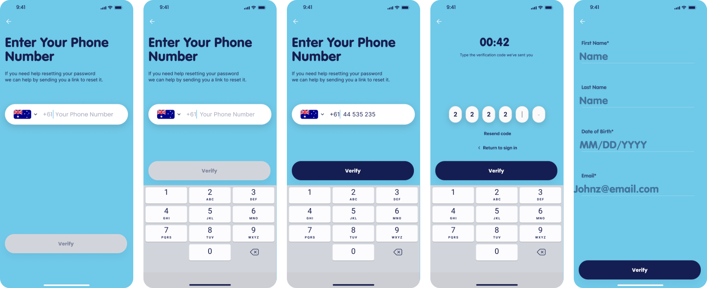
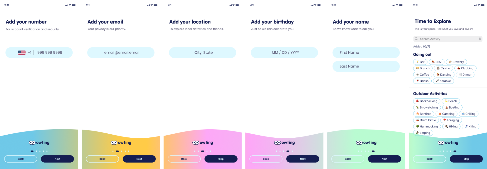
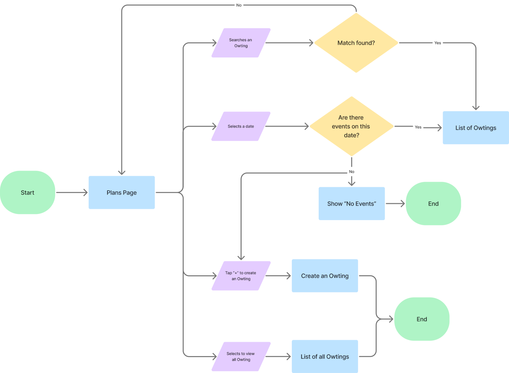
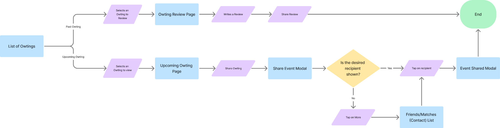

Owting
Making it easier to join a community and take part
At Owting, I worked on the experiences that help people move from discovering a community to participating in it. My work included redesigning community onboarding, simplifying event discovery and RSVP, designing group-chat experiences, and building reusable components to support consistent implementation.
- Role
- Product Designer (UI/UX)
- Timeline
- September–December 2025
- Product status
- Live on the App Store
- Shipped work
- Community onboarding and event-card / RSVP redesigns
- Direct collaborators
- Ramgopal (Ram, Lead Designer), Casey Black (CEO), and Sahar
- Scope
- Community onboarding, events and RSVP, group chats, and a reusable Figma component system
I worked directly with Ramgopal (Ram), Casey Black, and Sahar. I collaborated with product leadership to prioritize changes and with engineers to define interaction states, capacity behavior, and implementation specifications. The onboarding and event-card / RSVP redesigns shipped in the product. The group-chat screens featured below were also created as part of my work for Owting.

Community onboarding: making the path to joining clearer
I led the end-to-end redesign and launch of community onboarding, simplifying user flows, form interactions, and navigation. The work focused on making a multi-step experience easier to move through and complete.
Onboarding completion increased from 64% to 86%—an increase of 22 percentage points in the before-and-after comparison.
These screens show the previous onboarding experience at the end of Version 1, before the redesigned flow.

Version 2.0 introduces a guided, step-by-step flow with focused screens for contact information, location, birthday, name, and interests. Clear progress indicators, contextual explanations, and consistent navigation help users understand each step as they set up their profile.

Mapping the journey from finding an Owting to sharing it
These flows map how users move through the Plans experience: finding an event, creating a plan, reviewing an Owting, and sharing an upcoming event with someone else. Mapping the branches makes the key decisions, alternative paths, and completion states explicit before translating them into screens.
Discovery and creation: supporting different starting points
The Plans page is the shared entry point for four intentions. Users can search for a particular Owting, select a date, tap “+” to create an Owting, or browse all Owtings. Keeping these routes together supports people who know what they want as well as those who are still exploring.

The search branch checks whether a match exists: a successful search leads to the event list, while the alternative loops back to Plans. The date branch checks whether events are available on the selected day. It includes a “No Events” state and a route toward creating an Owting, accounting for both finding an existing plan and starting a new one.
Separating “Create an Owting” from “View all Owtings” gives each intention a clear destination. The flow also distinguishes an empty result from a successful list, so the interface can communicate what happened instead of leaving the meaning of an empty screen unclear.
Reviews and sharing: continuing from the event list
The second flow starts at the list of Owtings and separates two tasks. To review an Owting, the user selects it, opens its review page, writes a review, and shares that review. To share an upcoming event, the user opens its detail page and chooses “Share Owting,” bringing up the share modal.

The sharing decision asks whether the intended recipient is already visible. If so, the user selects that person directly. If not, “More” opens the Friends/Matches contact list, which rejoins the same recipient-selection path. This gives frequent choices a short route while keeping the broader contact list available.
Both sharing paths lead to an “Event Shared” confirmation. Making that completion state explicit gives the user feedback that the action succeeded. Together, the diagrams connect discovery to follow-through and identify the states needed beyond the main sequence of screens.
Event discovery: bringing the next action closer
In the original experience, users had to navigate through multiple screens to find an event and confirm attendance. That put additional steps between discovering something interesting and deciding to participate.
I made events more visible on the community dashboard and redesigned event cards to display the information needed for an initial decision: title, date, location, and available spots. A clearer RSVP action on each card allowed users to confirm attendance without navigating through several pages.
The design brought information and action together at the point of discovery, reducing the need to move between screens simply to understand an event and join it.
Designing the states behind an RSVP
The interaction needed to account for more than the first tap. I worked with engineers to determine how attendance status should update dynamically and how the interface should handle capacity limits and cancellations.
I developed event-card variants for upcoming events, fully booked events, and events the user had already RSVP’d to. Consistent status indicators and button behavior helped define what the interface should communicate as attendance changed.
Product leadership helped prioritize the changes around the broader goal of increasing community participation, while engineering collaboration made the interaction behavior concrete enough to implement.
Measuring participation
We measured feature adoption as the percentage of eligible active users who RSVP’d to at least one event, comparing two 30-day periods.
Adoption increased from 25% to 34.5%: a gain of 9.5 percentage points, or a 38% relative increase.
The comparison showed higher participation following the redesign. It was a before-and-after measure, so it does not isolate the design’s contribution from other changes during those periods.
Building a reusable system for design and engineering
Common interface elements—including buttons, event cards, navigation, form fields, and status indicators—could vary across the platform. Those differences created inconsistencies and additional questions during handoff.
I built a reusable Figma component library with consistent typography, spacing, variants, and interaction states. I also documented dimensions, responsive behavior, and implementation specifications so engineers had a shared reference for how components should look and behave.
The event card became a concrete example of that system: one reusable foundation with variants for different attendance and availability states.
Evaluating reuse and delivery
We audited the percentage of eligible interface instances built using shared components. Component reuse increased from 45% to 82%, a gain of 37 percentage points.
The reported time from approved design to completed development decreased from 12 to 8 working days, a reduction of approximately 33%. These measures helped us assess whether the library was being adopted and whether delivery was becoming more efficient; they do not establish the component library as the sole cause of the change.
Outcome
The work connected product participation with the system supporting its delivery: clearer onboarding, more direct event interactions, and reusable patterns for implementation.
My contribution extended from interaction design to the details engineers needed to build the experience. It reinforced the value of designing complete states and shared patterns alongside the primary user flow.
Download Now